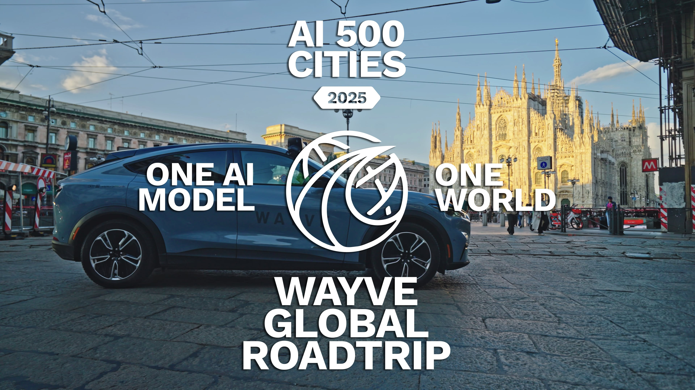

1つのAIモデル。90都市。再訓練はゼロ。AI-500 Roadshowの最初の区間で、Wayveの基盤モデルは、汎用の運転知能がグローバルにスケールし、3大陸にまたがる未知の道路、交通、天候条件へ適応できることを示した。
Wayveは、大規模で多様な運転データで訓練されたFoundation Modelである汎用AI Driverを構築している。人間と同じように、このモデルはルートを暗記せず、HDマップにも依存しない。世界を理解し、新しい環境に適応し、学習済み経験を未知の状況へ適用する。
Wayveはこれを実証するため、最も野心的な実世界テストであるAI-500 Roadshowを開始した。目標は、2025年末までに1つのモデルを500都市へ持ち込むこと。再訓練なし、地域別コードなし。ただ1つのモデルを、世界中の実道路でテストする。
最初の3区間では、欧州、北米、アジアにまたがる90都市を90日で走行した。この節目は、運転向けEmbodied AIの最も広範な実証であり、Foundation Modelが新しく多様で未経験の環境へ汎化できることを示している。
90都市のうち62%は、Wayveのテストフリートがこれまで展開されたことのない都市だった。モデルは特定都市に合わせて再訓練されるのではなく、スイスアルプスのヘアピンカーブのような新しいシナリオへ、運転に関する一般概念を適用した。
この実証が重要なのは、地理ごとのチューニング、HDマップ、ルールベースの積み上げに依存するスケーリングとは異なる道筋を示すからである。Wayveは、単一モデルでODDを広げるために、データ多様性とFoundation Modelの汎化能力を中核に置いている。
都市ごとの細かな実装を減らし、未知の都市へ直接展開する能力は、量産自動運転のコスト構造を大きく変える可能性がある。WayveのAI-500は、E2Eモデルの性能だけでなく、運用・検証・ODD拡張戦略としても重要な事例である。